Cards – rebuilding a product area from the ground upКарты: раздел, пересобранный с нуля
Profee already had cards – a tab left over from an older generation of the app: cards as tiles in a carousel, with nothing about the money behind them. The bet: a card that looks and works like a real product will make people keep money in Profee and pay with it. I redesigned the whole area for iOS and Android
Карты в Profee уже были – вкладка из старой версии приложения: карты плитками в карусели и ничего о деньгах на них. Ставка была такая: если карта будет выглядеть и работать как нормальный продукт, люди начнут держать деньги в Profee и платить картой. Я заново спроектировала весь раздел для iOS и Android
My roleМоя роль
Product designer, end to end: competitive audit of card products, IA of the Cards tab, every iOS and Android flow, an unmoderated usability test, the Cards tab and the linked account screen, and the copy with Claude-based agents I built with the design leadПродуктовый дизайнер, вела проект от начала до конца: разбор карточных продуктов конкурентов, структура раздела, все сценарии на iOS и Android, немодерируемый юзабилити-тест, вкладка «Карты» и экран привязанного счёта. Тексты писала с агентами на Claude, которых мы собрали с лидом дизайна
TeamКоманда
Product manager, design lead on review, iOS and Android developers, backend and QAПродакт-менеджер, лид дизайна на ревью, iOS- и Android-разработчики, бэкенд и QA
TimelineСроки
2025–2026
PlatformsПлатформы
iOS and AndroidiOS и Android
Context
Контекст
The card existed – nobody treated it as a productКарта была, но продуктом её никто не считал
Profee is built for cross-border remittances. By autumn 2025 it also had a wallet people could top up – and a Cards tab inherited from an older version of the app: a carousel of cards, four buttons, an empty history, and nothing that showed which account a card spends from
Profee – сервис международных переводов. К осени 2025 в нём уже был кошелёк, который можно пополнять, и вкладка «Карты», доставшаяся от старой версии приложения: карусель карт, четыре кнопки, пустая история и ни слова о том, с какого счёта карта тратит деньги
The constraint. Accounts existed in Profee long before this project, and the backend ties them to cards one way: every card gets its own EUR account when it is issued, one account per card. A card can't spend from an account the person already has, and one account can't hold several cards. The design had to make that clear, not hide it
Competitors – Wise, Revolut, N26 – all offered virtual or physical cards. There was no user research behind the decision to build the card – it was a competitive gap and a bet: a card that people want to use would turn the wallet from a transit point into a place to keep money
Ограничение. Счета в Profee появились задолго до этого проекта, и бэкенд связывает их с картами только в одну сторону: при выпуске у каждой карты открывается свой счёт в евро, один счёт на одну карту. Привязать карту к уже открытому счёту нельзя, как и выпустить несколько карт на один счёт. Дизайн должен был сделать это понятным, а не спрятать
У конкурентов – Wise, Revolut, N26 – карты, виртуальные или пластиковые, были у всех. Пользовательских исследований за решением делать карту не было: только отставание от конкурентов и ставка на то, что удобная карта превратит кошелёк из перевалочного пункта в место, где деньги хранят
What the design had to do
Что должен был сделать дизайн
Show which account a card spends from – the constraint, made visible
Put everything you do with a card on one screen, not a screen per action
Show what a top-up costs before the person picks how to pay
Показать, с какого счёта карта списывает деньги: ограничение должно быть на виду
Собрать всё, что делают с картой, на одном экране, а не по экрану на действие
Показать, сколько стоит пополнение, до того как человек выберет способ
Before
До
The Cards tab, October 2025Вкладка «Карты», октябрь 2025
Real screenshots from the app before the redesign. Cards sit in a carousel of tiles with no link to the account behind them, every action is a separate screen, and the empty state asks you to make a transfer – not to use the card
Настоящие скриншоты приложения до редизайна. Карты лежат плитками в карусели и никак не связаны со счётом, на каждое действие отдельный экран, а пустое состояние предлагает сделать перевод вместо того, чтобы воспользоваться картой
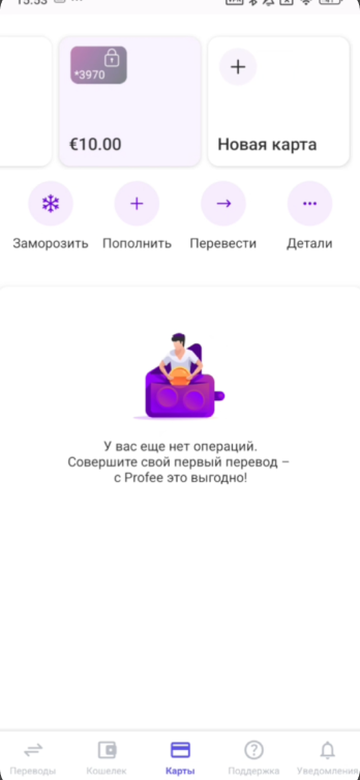
Cards tabВкладка «Карты»Card carousel on top, four round buttons, an empty history that asks for a transferСверху карусель карт, четыре круглые кнопки и пустая история, которая предлагает сделать перевод
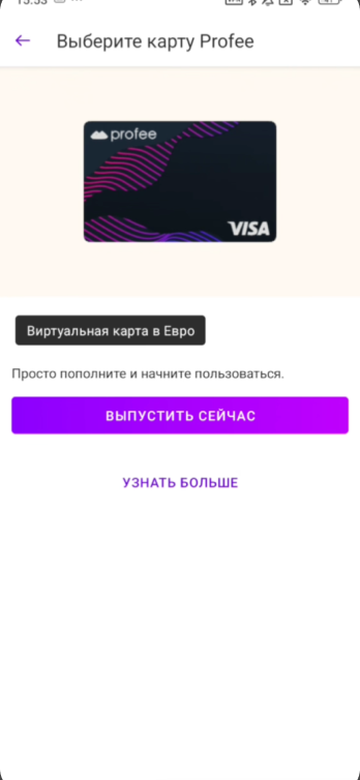
Issue a cardВыпуск картыA picture of the card, one line of copy, Issue nowКартинка карты, одна строка текста, «Выпустить сейчас»
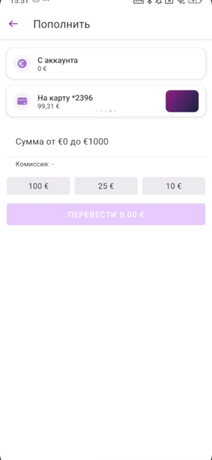
Top upПополнениеFrom account to card, presets of 100 / 25 / 10 €, fee shown as a dashСо счёта на карту, готовые суммы 100 / 25 / 10 EUR, вместо комиссии прочерк
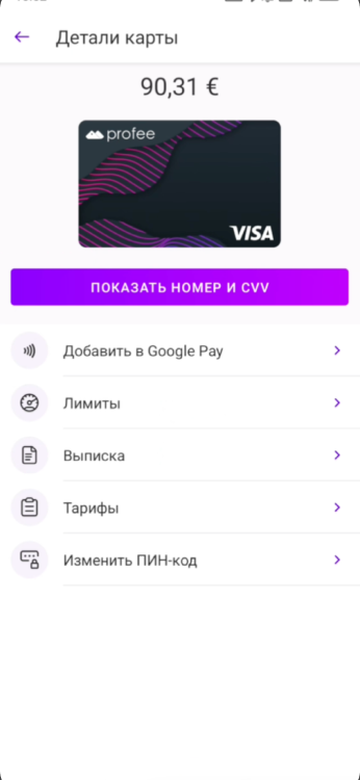
Card detailsДанные картыBalance, card image, a menu of five items – Google Pay, limits, statement, fees, PINБаланс, картинка карты и меню из пяти пунктов – Google Pay, лимиты, выписка, тарифы, ПИН-код
Research
Исследование
Studied the competition before drawing a single screenРазобрала конкурентов, прежде чем рисовать
Before designing, I went through Revolut, N26, Monzo, Wise, Cash App and Vivid scenario by scenario: how they show card states, where freeze lives, how top-up fees are shown and how a blocked card recovers
До проектирования я прошла Revolut, N26, Monzo, Wise, Cash App и Vivid по сценариям: как они показывают состояния карты, где находится заморозка, как показана комиссия при пополнении и как выйти из блокировки карты
The working file, zoomed out – competitor boards on the left, iOS and Android flows on top, the full app flow bottom right · Open full size ↗Рабочий файл целиком: слева конкуренты, сверху сценарии iOS и Android, справа внизу полная схема приложения · Открыть целиком ↗
Scope
Объём работы
A full product area – not a single featureЦелый раздел приложения
Cards is a section with its own tab and structure, not one flow. I designed every scenario in it
У карт своя вкладка и своя структура, и все сценарии в ней я спроектировала сама
01
Card issuance
Выпуск карты
02
Card details
Данные карты
03
Freeze / Unfreeze
Заморозка / Разморозка
04
Top up
Пополнение
05
Reissue & expiry
Перевыпуск и окончание срока
Copy without the routine. Cards was the feature where the team started using AI in everyday work. The design lead and I built Claude-based agents that follow our editorial policy and rules. With them I wrote, checked and localized every text in the area into 13 languages. The strings first went to Phrase through Claude, then straight into the iOS and Android code, and we dropped Phrase altogether
Тексты без рутины. На картах команда впервые стала использовать AI в ежедневной работе. Вместе с лидом дизайна мы собрали агентов на Claude, которые пишут по нашей редполитике и правилам. С ними я написала, проверила и перевела на 13 языков все тексты раздела. Сначала строки уходили во Phrase через Claude, потом – сразу в код iOS и Android, и от Phrase мы в итоге отказались
The flow, played back from the prototypeВесь сценарий в прототипеIssue → top up → success → card details → freeze. Every transition is the real gesture: push, sheet, dissolveВыпуск → пополнение → успех → данные карты → заморозка. Переходы такие же, как в приложении: сдвиг экрана, шторка снизу, плавная смена
Iterations
Итерации
Started from the balance, ended with the cardНачали с баланса, пришли к карте
Accounts came first in Profee, so the first versions started there: the familiar account screen with the balance on top, and the card fitted in as a tile or a strip. But Cards is its own section of the app, and the link only goes one way – every card has an account, while an account can live without a card. So the tab turned card-first, and the account screen kept the balance on top, with the card added as a strip
Счета в Profee появились раньше карт, поэтому первые версии шли от них: привычный экран счёта с балансом наверху, а карта встраивалась плиткой или полоской. Но карты – отдельный раздел приложения, и связь работает только в одну сторону: у каждой карты есть счёт, а счёт может жить и без карты. Поэтому во вкладке главной стала карта, а экран счёта сохранил баланс наверху и получил полоску карты
From the account to the cardОт счёта к карте
Where it started, three balance-first versions, three card-first ones
Откуда начали, три версии «сначала баланс» и три – «сначала карта»
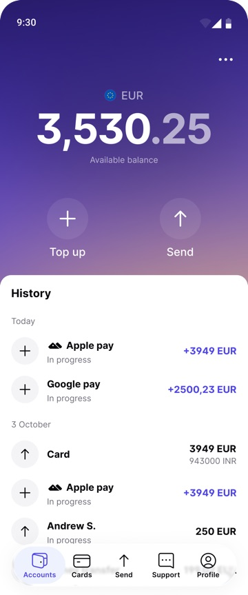
Starting pointОтправная точкаAn ordinary account in Accounts – the screen cards had to fit intoОбычный счёт во вкладке «Счета» – экран, в который нужно было встроить карты
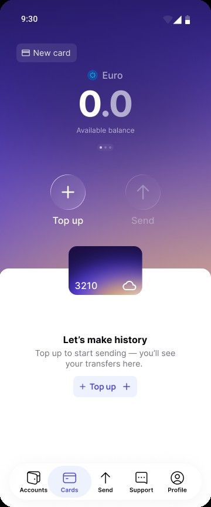
Balance firstСначала балансThe card as a tile under the balance, an empty historyКарта плиткой под балансом, история пуста
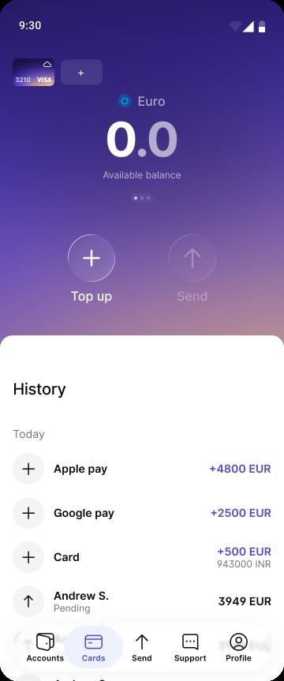
Balance first, historyСначала баланс и историяCards as thumbnails, the history of top-ups and transfers right under the balanceКарты – миниатюрами, история пополнений и переводов сразу под балансом
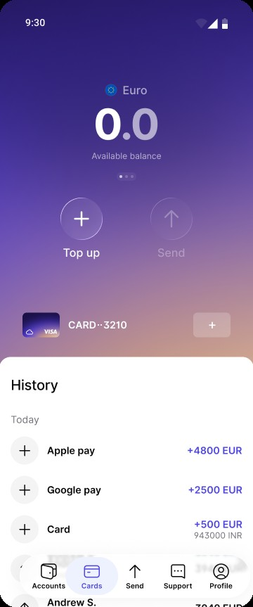
Balance first, card stripСначала баланс, карта полоскойThe card shrinks to a strip between the balance and the historyКарта сжимается до полоски между балансом и историей
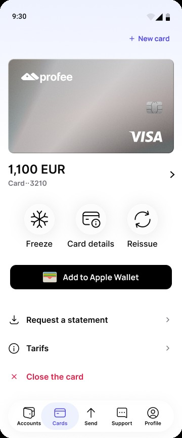
Card firstСначала картаA big card, the balance under it, Add to Apple Wallet as the main actionБольшая карта, под ней баланс, главное действие – «Добавить в Apple Wallet»
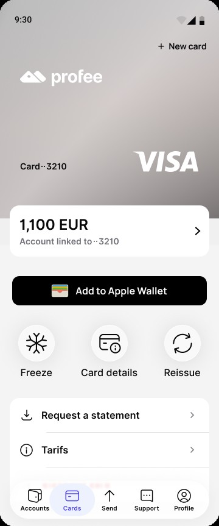
Card on top, account belowКарта сверху, счёт под нейThe card fills the top, the linked account is a separate block under it – close to what shippedКарта занимает верх экрана, привязанный счёт – отдельный блок под ней. Почти то, что вышло в итоге
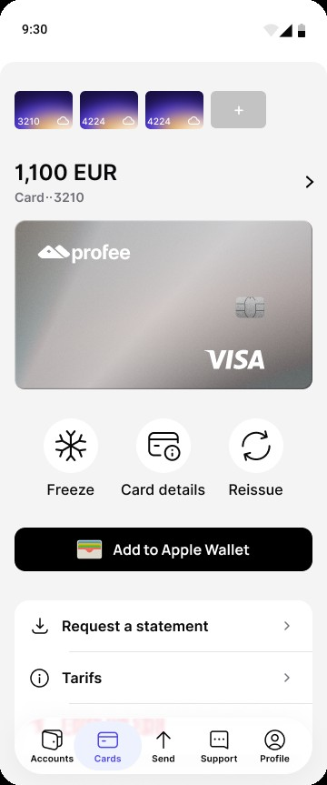
Several cardsНесколько картThumbnails on top to switch between cardsМиниатюры сверху, чтобы переключаться между картами
Behind the scenes
Что осталось за кадром
Add to Apple Wallet was the main button in the card-first versions. Mid-project it turned out that adding the card to Apple Wallet straight from the app needed work too heavy to fit the deadline. The button went, and the shipped version has a How to add to wallet guide instead
В версиях «сначала карта» главной кнопкой было «Добавить в Apple Wallet». По ходу работы выяснилось, что добавление карты в Apple Wallet прямо из приложения требует слишком большой доработки и в сроки не укладывается. Кнопку убрали, а в финале вместо неё инструкция «Как добавить в Wallet»
Tested with peopleПроверили на людях
November 2025, an unmoderated test in Wynde on the in-between version: 5 paid respondents from the Wynde panel and 8 colleagues, three tasks in the Figma prototype
Ноябрь 2025, немодерируемый тест в Wynde на промежуточной версии: 5 платных респондентов из панели Wynde и 8 коллег, три задачи в прототипе Figma
The three tasks as a respondent saw them: get and top up the card, send money, freeze the cardТри задачи глазами респондента: выпустить и пополнить карту, отправить деньги, заморозить карту
5 / 5
median 28 sмедиана 28 с
Got the card and topped it up
Выпустили карту и пополнили её
5 / 5
median 7 sмедиана 7 с
Sent money from the card account
Отправили деньги со счёта карты
5 / 5
median 11 sмедиана 11 с
Froze the card
Заморозили карту
The numbers are from the panel group; the colleagues who got to the tasks also completed all of them. Samples this small make the comments matter more than the times: one person had to search for the freeze and missed the step where you pick the recipient, another asked for a separate section for the card, and a colleague expected to start a transfer first and pick the card after – not to open the card to send money. The test was a check, not a turning point: it confirmed the flow was clear, and nothing essential changed after it
Цифры – по группе из панели; коллеги, которые дошли до задач, тоже выполнили все. На такой маленькой выборке комментарии важнее времени: один участник искал заморозку и пропустил шаг выбора получателя, другой попросил отдельный раздел для карты, а коллега ожидала сначала начать перевод и уже потом выбрать карту – а не заходить в карту, чтобы отправить деньги. Тест ничего не перевернул: он подтвердил, что сценарий понятен, и после него существенных изменений не было
What shippedЧто запустили
The card leads in Cards, the balance leads in the account. Goals 1 and 2: the linked account sits above the card, and Freeze, Card details and Reissue are on the same screen
Во вкладке «Карты» главное – карта, на экране счёта – баланс. Цели 1 и 2: привязанный счёт показан над картой, а «Заморозить», «Данные карты» и «Перевыпустить» собраны на одном экране
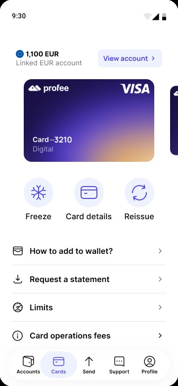
Cards tabВкладка «Карты»The card leads, its linked account and balance are one tap away above itКарта главная, привязанный счёт и баланс – в одно касание над ней
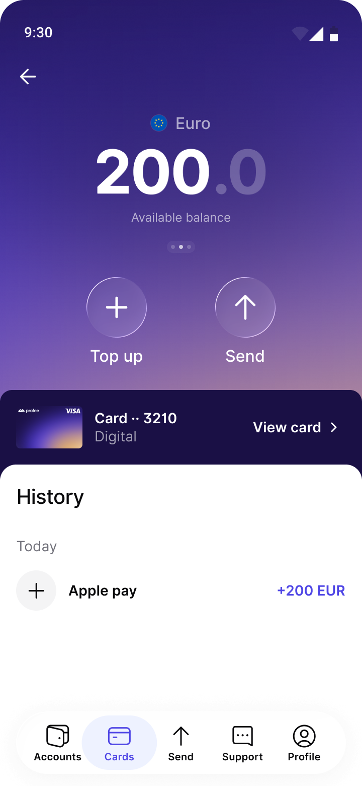
Linked accountПривязанный счётThe existing account screen, with the card added as a strip under the balanceПрежний экран счёта, в который добавилась полоска карты под балансом
The rule that settled it: every card has an account, but not every account has a card – so the card leads in Cards, and the balance leads in the account
Спор решило правило: у каждой карты есть счёт, но не у каждого счёта есть карта. Поэтому в «Картах» главная карта, а в счёте – баланс
Design decisions
Решения
Details that matteredДетали, от которых всё зависело
Fee transparency in top-up – goal 3. Every way to pay has its own fee and speed – from the Profee wallet and a card to Google Pay, Apple Pay and a bank transfer. Both are shown as tags right in the list of methods, before the user chooses, so the confirmation screen holds no surprises. The flow went through three iterations in two weeks; each one made the fee clearer
Комиссию видно сразу (цель 3). У каждого способа пополнения своя комиссия и скорость – от кошелька Profee и карты до Google Pay, Apple Pay и банковского перевода. И то и другое стоит метками прямо в списке способов, ещё до выбора, поэтому на экране подтверждения сюрпризов нет. За две недели сценарий прошёл три итерации, и с каждой комиссия становилась понятнее
Freezing without fear. A freeze is only useful if it feels reversible – if people aren't sure they'll get access back, they won't tap it. So the freeze is designed as a story with no dead ends: a toast and a frosted card while it is frozen, an explanation one tap away behind the ?, and a failure state with a way out
Заморозка без страха. Заморозка полезна, только если понятно, что её можно отменить: если человек не уверен, что вернёт доступ к деньгам, он не нажмёт. Поэтому в заморозке нет тупиков: уведомление и заиндевевшая карта, объяснение в одно касание за значком «?» и экран ошибки, из которого всегда есть выход
The freeze itself: one tap, a toast, and the card frosts over – recorded from the working prototypeЗаморозка вживую: одно касание, уведомление – и карта покрывается инеем. Запись с рабочего прототипа
Card activeКарта активнаFreeze is one tap away – and the ? next to it opens the explanationЗаморозить можно в одно касание, а «?» рядом открывает объяснение
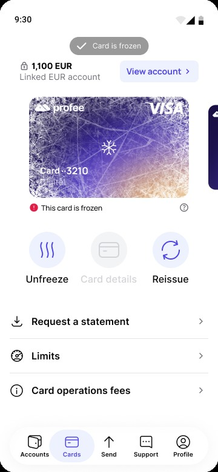
Card is frozenКарта замороженаA toast confirms it; the card art frosts over, Card details is disabledУведомление подтверждает, карта покрывается инеем, «Данные карты» недоступны
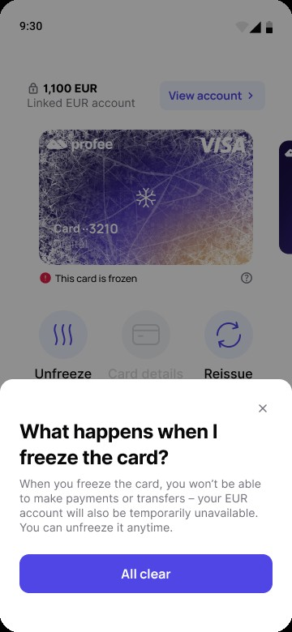
What happens when I freezeЧто будет, если заморозитьBehind the ? – payments pause, the balance stays safe, unfreeze anytimeЗа значком «?»: платежи встанут, баланс в безопасности, разморозить можно в любой момент
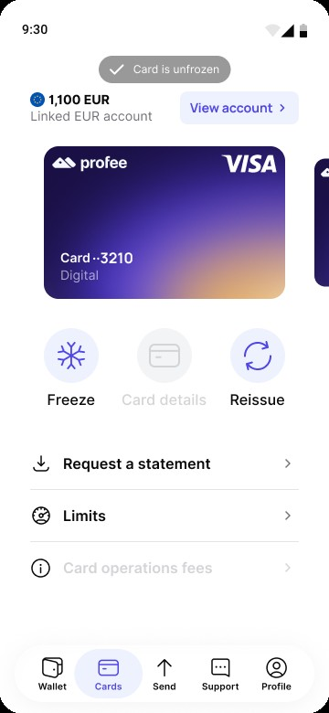
Card is unfrozenКарта размороженаBack to active: the frost clears and every action returnsСнова активна: иней сходит, все действия возвращаются
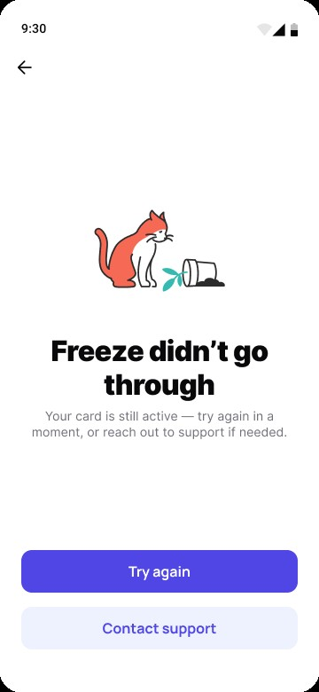
If it failsЕсли не получилосьOne error pattern for freeze and unfreeze: what state the card is in now, and two ways outОдин экран ошибки для заморозки и разморозки: в каком состоянии карта сейчас и два выхода
Results
Результаты
The area works. The bet is only half wonРаздел работает. Ставка сыграла наполовину
The new Cards tab launched on March 6, 2026 on iOS and Android. Comparing April, the first full month, with August, the numbers from Amplitude say two things at once
Новая вкладка «Карты» вышла 6 марта 2026 года на iOS и Android. Если сравнить апрель, первый полный месяц, с августом, данные Amplitude говорят сразу о двух вещах
The product area is alive. Card issuance settled into a steady monthly rate after the launch spike, and the share of active senders who open the Cards tab in a month doubled
Раздел живёт. После всплеска на запуске карты выпускают в ровном темпе, а доля активных отправителей, которые заходят во вкладку за месяц, выросла вдвое
The card is not yet the reason to keep money. The share of senders who top up the wallet grew seven times, from 1.5% to 10.5% – through Google Pay, Apple Pay and BLIK, top-up methods that weren't part of this project. Fewer than 5% of them hold a card. Card payments themselves aren't visible in Amplitude – they happen at the card processor. The closest signal: 40% of Android card holders open Google Pay from the card within 30 days, most within seconds of issuing it. On iOS, where the Apple Wallet button was cut, there is no such path
Держать деньги из-за карты пока не стали. Доля отправителей, которые пополняют кошелёк, выросла в семь раз, с 1,5% до 10,5% – через Google Pay, Apple Pay и BLIK, а эти способы пополнения в мой проект не входили. Карта есть меньше чем у 5% из них. Сами оплаты картой в Amplitude не видны – они проходят у процессинга. Самый близкий косвенный сигнал: 40% владельцев карты на Android открывают Google Pay прямо из карты в первые 30 дней, большинство – через несколько секунд после выпуска. На iOS, где кнопку Apple Wallet пришлось убрать, такого пути нет
×2
3.9%→8%
Active senders who open the Cards tab in a month, April → August
Доля активных отправителей, которые заходят во вкладку за месяц, апрель → август
<5%
August 2026август 2026
People topping up the wallet who hold a card
Доля владельцев карты среди тех, кто пополняет кошелёк
40%
Android · 30 daysAndroid · 30 дней
Card holders who open Google Pay from the card
Владельцев карты открывают Google Pay прямо из карты
Honest read
Честный вывод
The hypothesis was "a good card makes people keep money in Profee". The outcome happened – people do keep money in Profee now – but the mechanism was different: they keep it in the wallet, and the card is a feature few of them reach for. Part of the reason is structural: each card opens its own EUR account, separate from the wallet, so money has to be moved to the card before it can be spent. The redesign delivered a product area people use; it hasn't yet made the card the reason to stay
Гипотеза была такая: «хорошая карта заставит людей держать деньги в Profee». Деньги в Profee теперь действительно держат, но не из-за карты: их держат в кошельке, а до карты доходят немногие. Отчасти дело в устройстве продукта: у каждой карты свой счёт в евро, отдельный от кошелька, и деньги сначала нужно перевести на карту, а уже потом тратить. Редизайн дал раздел, которым пользуются, но причиной оставаться в Profee карта пока не стала
Reflection
Выводы
What I learned, and what's nextЧто я поняла и что дальше
The constraint mattered more than any screen. One account per card decided the architecture, the direction of the iterations and, in the end, why the card stays apart from the money people keep in Profee. Design could make that constraint visible and easy to live with – it couldn't remove it
Ограничение оказалось важнее любого экрана. Правило «один счёт – одна карта» определило структуру, направление итераций и в итоге то, почему карта живёт отдельно от денег, которые люди держат в Profee. Дизайн мог сделать это ограничение видимым и удобным – но убрать его не мог
What's next. So the next step is not a screen but a change in the backend. The wallet grew without the card, so the card has to live inside the wallet: one balance, and a card that spends straight from it. Then every Google Pay or Apple Pay top-up is money the card can already spend, with no transfer in between
Что дальше. Поэтому следующий шаг – не экран, а изменение в бэкенде. Кошелёк вырос без карты – значит, карта должна жить внутри кошелька: один баланс и карта, которая тратит прямо с него. Тогда каждое пополнение через Google Pay или Apple Pay – это деньги, которые картой уже можно потратить, без перевода между счетами